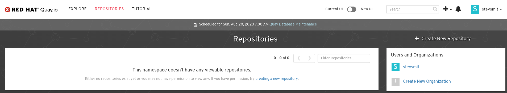
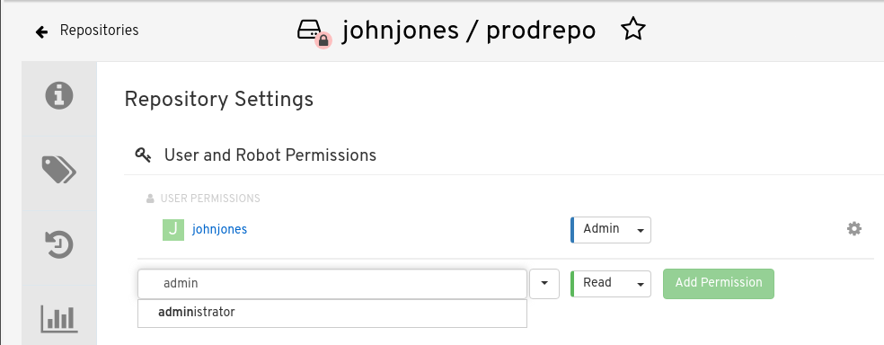
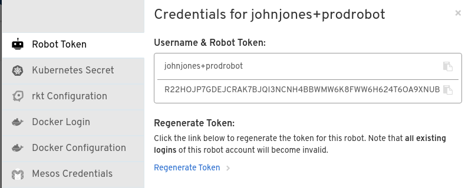
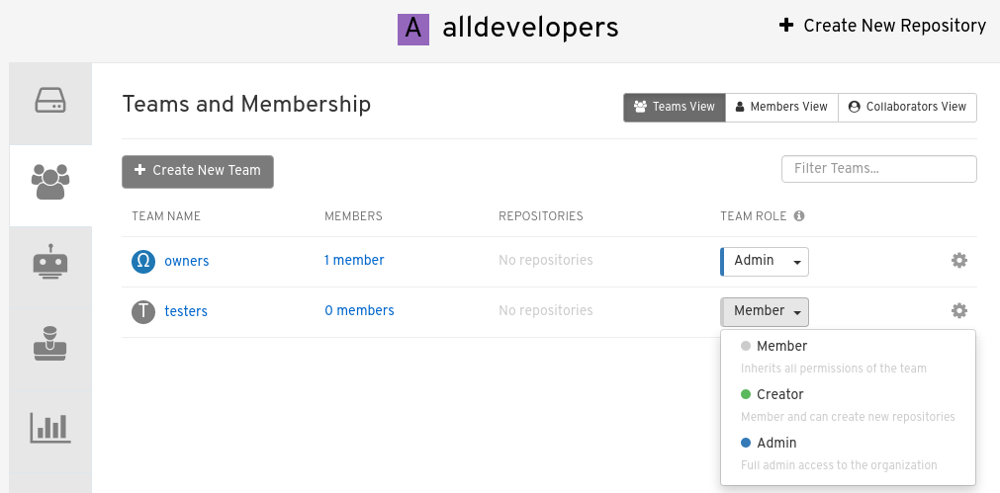
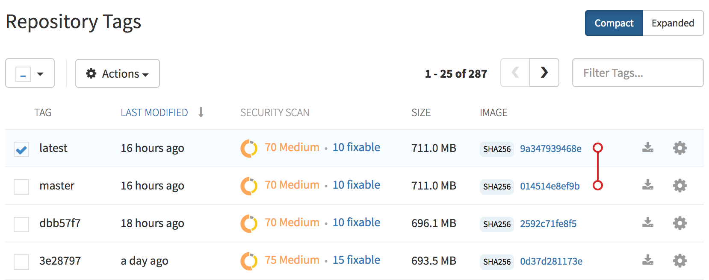
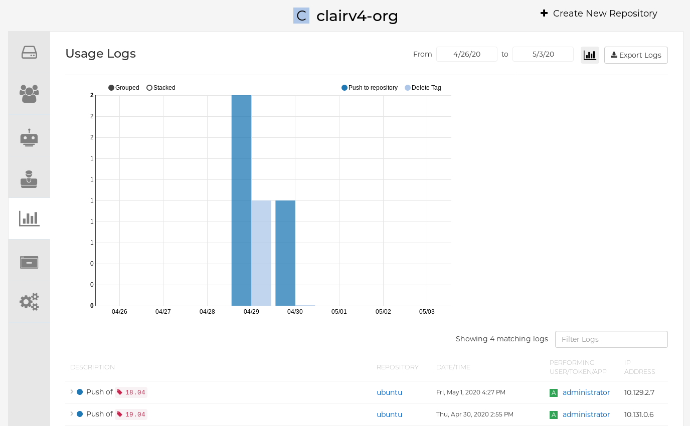
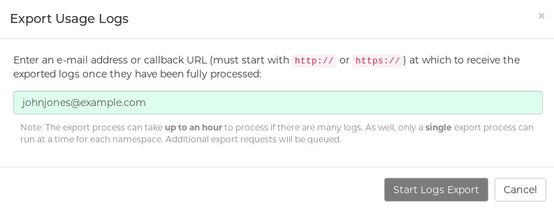
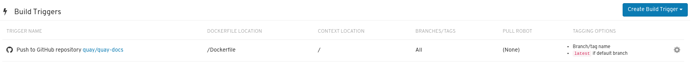
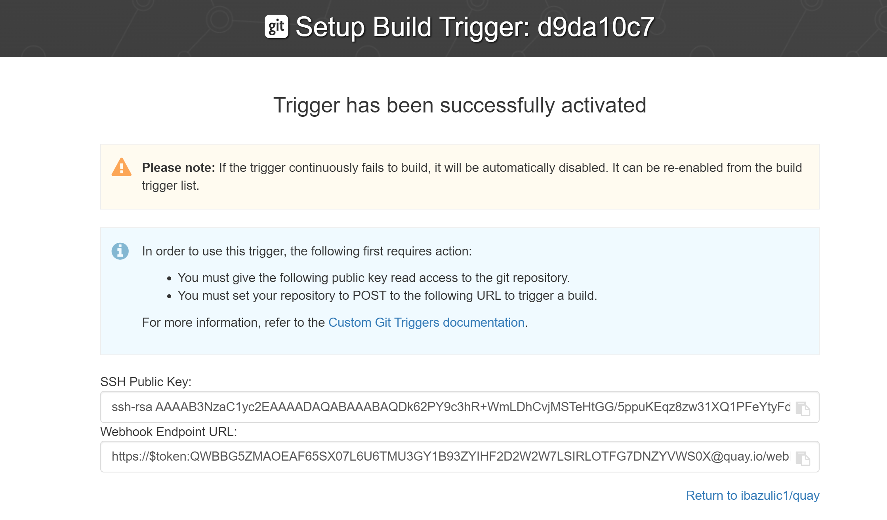

- Preface
- 1. Quay.io overview
- 2. Quay.io support
- 3. Quay.io user interface overview
- 4. Users and organizations
- 5. Working with tags
- 6. Clair for Red Hat Quay
- 7. Viewing and exporting logs
- 8. Building Dockerfiles
- 9. Setting up a custom Git trigger
- 10. Repository Notifications
- 11. Open Container Initiative support
- 12. Using the v2 UI
- 12.1. v2 user interface configuration
- 12.1.1. Creating a new organization using the v2 UI
- 12.1.2. Deleting an organization using the v2 UI
- 12.1.3. Creating a new repository using the v2 UI
- 12.1.4. Deleting a repository using the v2 UI
- 12.1.5. Pushing an image to the v2 UI
- 12.1.6. Deleting an image using the v2 UI
- 12.1.7. Creating a robot account using the v2 UI
- 12.1.8. Organization settings for the v2 UI
- 12.1.9. Viewing image tag information using the v2 UI
- 12.1.10. Adjusting repository settings using the v2 UI
- 12.2. Enabling the legacy UI
- 12.1. v2 user interface configuration
Preface
This comprehensive guide provides users with the knowledge and tools needed to make the most of our robust and feature-rich container registry service, Quay.io.
Chapter 1. Quay.io overview
Quay.io is a registry for storing, building, and distributing container images and other OCI artifacts. This robust and feature-rich container registry service has gained widespread popularity among developers, organizations, and enterprises, establishing itself as one of the pioneering platforms in the containerization ecosystem. It offers both free and paid tiers to cater to various user needs.
At its core, Quay.io serves as a centralized repository for storing, managing, and distributing container images. One primary advantage of Quay.io is its flexibility and ease of use. It offers an intuitive web interface that allows users to quickly upload and manage their container images. Developers can create private repositories, ensuring sensitive or proprietary code remains secure within their organization. Additionally, users can set up access controls and manage team collaboration, enabling seamless sharing of container images among designated team members.
Quay.io addresses container security concerns through its integrated image scanner, Clair. The service can automatically scan container images for known vulnerabilities and security issues, providing developers with valuable insights into potential risks and suggesting remediation steps.
Quay.io excels in automation, and supports integration with popular Continuous Integration/Continuous Deployment (CI/CD) tools and platforms, enabling seamless automation of the container build and deployment processes. As a result, developers can streamline their workflows, significantly reducing manual intervention and improving the overall development efficiency.
Quay.io caters to the needs of both large and small-scale deployments. Its robust architecture and support for high availability ensures that organizations can rely on it for mission-critical applications. The platform can handle significant container image traffic and offers efficient replication and distribution mechanisms to deliver container images to various geographical locations.
Quay.io has established itself as an active hub for container enthusiasts. Developers can discover a vast collection of pre-built, public container images shared by other users, making it easier to find useful tools, applications, and services for their projects. This open sharing ecosystem fosters collaboration and accelerates software development within the container community.
As containerization continues to gain momentum in the software development landscape, Quay.io remains at the forefront, continually improving and expanding its services. The platform’s commitment to security, ease of use, automation, and community engagement has solidified its position as a preferred container registry service for both individual developers and large organizations alike.
As technology evolves, it is crucial to verify the latest features and updates on the Quay.io platform through its official website or other reliable sources. Whether you are an individual developer, part of a team, or representing an enterprise, Quay.io can enhance your containerization experience and streamline your journey towards building and deploying modern applications with ease.
Chapter 2. Quay.io support
Technical support is a crucial aspect of the Quay.io container registry service, providing assistance not only in managing container images but also ensuring the functionality and availability of the hosted platform.
To help users with functionality-related issues, Red Hat offers Quay.io customers access to several resources. The Red Hat Knowledgebase contains valuable content to maximize the potential of Red Hat’s products and technologies. Users can find articles, product documentation, and videos that outline best practices for installing, configuring, and utilizing Red Hat products. It also serves as a hub for solutions to known issues, providing concise root cause descriptions and remedial steps.
Additionally, Quay.io customers can count on the technical support team to address questions, troubleshoot problems, and provide solutions for an optimized experience with the platform. Whether it involves understanding specific features, customizing configurations, or resolving container image build issues, the support team is dedicated to guiding users through each step with clarity and expertise.
For incidents related to service disruptions or performance issues not listed on the Quay.io status page, which includes availability and functionality concerns, paying customers can raise a technical support ticket using the Red Hat Customer Portal. A service incident is defined as an unplanned interruption of service or reduction in service quality, affecting multiple users of the platform.
With this comprehensive technical support system in place, Quay.io ensures that users can confidently manage their container images, optimize their platform experience, and overcome any challenges that might arise.
Additional resources
Current Red Hat Quay and Quay.io users can find more information about troubleshooting and support in the Red Hat Quay Troubleshooting guide.
Chapter 3. Quay.io user interface overview
The user interface (UI) of Quay.io is a fundamental component that serves as the user’s gateway to managing and interacting with container images within the platform’s ecosystem. Quay.io’s UI is designed to provide an intuitive and user-friendly interface, making it easy for users of all skill levels to navigate and harness Quay.io’s features and functionalities.
This documentation section aims to introduce users to the key elements and functionalities of Quay.io’s UI. It will cover essential aspects such as the UI’s layout, navigation, and key features, providing a solid foundation for users to explore and make the most of Quay.io’s container registry service.
Throughout this documentation, step-by-step instructions, visual aids, and practical examples are provided.
- Exploring applications and repositories
- Using the Quay.io tutorial
- Pricing and Quay.io plans
- Signing in and using Quay.io features
Collectively, this document ensures that users can quickly grasp the UI’s nuances and successfully navigate their containerization journey with Quay.io.
3.1. Quay.io landing page
Navigating to Quay.io, directs users to the service’s landing page. The Quay.io landing page serves as the central hub for users to access the container registry services offered. This page provides essential information and links to guide users in securely storing, building, and deploying container images effortlessly.
The landing page of Quay.io includes links to the following resources:
- Explore. On this page, you can search the Quay.io database for various applications and repositories.
- Tutorial. On this page, you can take a step-by-step walkthrough that shows you how to use Quay.io.
- Pricing. On this page, you can learn about the various pricing tiers offered for Quay.io. There are also various FAQs addressed on this page.
- Sign in. By clicking this link, you are re-directed to sign into your Quay.io repository.
.
The landing page also includes information about scheduled maintenance. During scheduled maintenance, Quay.io is operational in read-only mode, and pulls function as normal. Pushes and builds are non-operational during scheduled maintenance. You can subscribe to updates regarding Quay.io maintenance by navigating to Quay.io Status page and clicking Subscribe To Updates.
The landing page also includes links to the following resources:
- Documentation. This page provides documentation for using Quay.io.
- Terms. This page provides legal information about Red Hat Online Services.
- Privacy. This page provides information about Red Hat’s Privacy Statement.
- Security. this page provides information about Quay.io security, including SSL/TLS, encryption, passwords, access controls, firewalls, and data resilience.
- About. This page includes information about packages and project used and a brief history of the product.
- Contact. This page includes information about support and contacting the Red Hat Support Team.
- All Systems Operational. This page includes information the status of Quay.io and a brief history of maintenance.
- Cookies. By clicking this link, a popup box appears that allows you to set your cookie preferences.
.
You can also find information about Trying Red Hat Quay on premise or Trying Red Hat Quay on the cloud, which redirects you to the Pricing page. Each option offers a free trial.
3.1.1. Signing into Quay.io
You can sign into your repository by clicking the Sign In link in the header. This takes you to the Quay.io repository landing page, which servers as a dedicated hub where users can access and manage their repositories with ease. It acts as a centralized dashboard that provides a comprehensive overview of the repositories associated with a user’s account. From this page, users can efficiently organize, navigate, and interact with their container images and related resources.
If you have not done so, you must first register for a Red Hat Account before you can access your Quay.io repository.
3.1.2. Exploring Quay.io
The Quay.io Explore page is a valuable hub that allows users to delve into a vast collection of container images, applications, and repositories shared by the Quay.io community. With its intuitive and user-friendly design, the Explore page offers a powerful search function, enabling users to effortlessly discover containerized applications and resources.
3.1.3. Trying Quay.io
The Quay.io Tutorial page offers users and introduction to the Quay.io container registry service. By clicking Continue Tutorial users learn how to perform the following features on Quay.io:
- Logging into Quay Container Registry from the Docker CLI
- Starting a container
- Creating images from a container
- Pushing a repository to Quay Container Registry
- Viewing a repository
- Setting up build triggers
- Changing a repository’s permissions
3.1.4. Information about Quay.io pricing
The Quay.io Pricing page offers information about various plans and the associated price. The cost of each tier can be found on the Pricing page. Quay.io plans include the following:
- Developer. This plan includes 5 private repositories and unlimited public repositories.
- Micro. This plan includes 10 private repositories, unlimited public repositories, and team-based permissions.
- Small. As the most popular plan, it includes 20 private repositories, unlimited public repositories, and team-based permissions.
- Larger Plans. Larger plans are available, varying from 50 to 15000 repositories. Each plan includes unlimited public repositories and team-based permissions.
All Quay.io plans include the following benefits:
- Continuous integration
- A 30-day free trial
- Public repositories
- Robot accounts
- Teams
- SSL/TLS encryption
- Logging and auditing
- Invoice history
3.1.4.1. Pricing FAQ
The following questions are commonly asked in regards to a Quay.io subscription.
How do I use Quay with my servers and code?
Using Quay with your infrastructure is separated into two main actions: building containers and distributing them to your servers.
You can configure Quay to automatically build containers of your code on each commit. Integrations with GitHub, Bitbucket, GitLab and self-hosted Git repositories are supported. Each built container is stored on Quay and is available to be pulled down onto your servers.
To distribute your private containers onto your servers, Docker or rkt must be configured with the correct credentials. Quay has sophisticated access controls — organizations, teams, robot accounts, and more — to give you full control over which servers can pull down your containers. An API can be used to automate the creation and management of these credentials.
How is Quay optimized for a team environment?
Quay’s permission model is designed for teams. Each new user can be assigned to one or more teams, with specific permissions. Robot accounts, used for automated deployments, can be managed per team as well. This system allows for each development team to manage their own credentials.
Full logging and auditing is integrated into every part of the application and API. Quay helps you dig into every action for more details. Additional FAQs
Can I change my plan?
Yes, you can change your plan at any time and your account will be pro-rated for the difference. For large organizations, Red Hat Quay offers unlimited users and repos. Do you offer special plans for business or academic institutions?
Please contact us at our support email address to discuss the details of your organization and intended usage.
Can I use Quay for free?
Yes! We offer unlimited storage and serving of public repositories. We strongly believe in the open source community and will do what we can to help! What types of payment do you accept?
Quay uses Stripe as our payment processor, so we can accept any of the payment options they offer, which are currently: Visa, MasterCard, American Express, JCB, Discover and Diners Club.
Chapter 4. Users and organizations
Before creating repositories to contain your container images in Quay.io, you should consider how these repositories will be structured. With Quay.io, each repository necessitates a connection with either an Organization or a User. This affiliation defines ownership and access control for the repositories.
4.1. Tenancy model

- Organizations provide a way of sharing repositories under a common namespace that does not belong to a single user. Instead, these repositories belong to several users in a shared setting, such as a company.
- Teams provide a way for an Organization to delegate permissions. Permissions can be set at the global level (for example, across all repositories), or on specific repositories. They can also be set for specific sets, or groups, of users.
-
Users can log in to a registry through the web UI or a by using a client, such as Podman or Docker, using their respective login commands, for example,
$ podman login. Each user automatically gets a user namespace, for example,<quay-server.example.com>/<user>/<username>, orquay.io/<username>. - Robot accounts provide automated access to repositories for non-human users like pipeline tools. Robot accounts are similar to OpenShift Container Platform Service Accounts. Permissions can be granted to a robot account in a repository by adding that account like you would another user or team.
4.2. Logging into Quay.io
A user account for Quay.io represents an individual with authenticated access to the platform’s features and functionalities. Through this account, you gain the capability to create and manage repositories, upload and retrieve container images, and control access permissions for these resources. This account is pivotal for organizing and overseeing your container image management within Quay.io.
Use the following procedure to log into Quay.io.
Prerequisites
- You have created a Red Hat account.
Procedure
- Navigate to Quay.io.
- In the navigation pane, select Sign In and log in using your Red Hat credentials.
If it is your first time logging in, you must confirm the automatically-generated username. Click Confirm Username to log in.
You are redirected to the Quay.io repository landing page.

4.3. Creating a repository
A repository provides a central location for storing a related set of container images. There are two ways to create a repository in Quay.io: by pushing an image with the relevant docker or podman command, or by using the Quay.io UI. Using either method has the same outcome.
4.3.1. Creating an image repository by using the UI
Use the following procedure to create a repository using the Quay.io UI.
Procedure
- Log in to your user account through the web UI.
On the Quay.io landing page, click Create New Repository. Alternatively, you can click the + icon → New Repository. For example:

On the Create New Repository page:
- Append a Repository Name to your username or to the Organization that you wish to use.
- Optional. Click Click to set repository description to add a description of the repository.
- Click Public or Private depending on your needs.
- Optional. Select the desired repository initialization.
- Click Create Private Repository to create a new, empty repository.
4.3.2. Creating an image repository by using the CLI
With the proper credentials, you can push an image to a repository using either Docker or Podman that does not yet exist in your Quay.io instance. In turn, this creates said repository.
Use the following procedure to create an image repository by pushing an image. Podman or Docker commands are acceptable.
Procedure
Pull a sample page from an example registry. For example:
$ sudo podman pull busybox
Example output
Trying to pull docker.io/library/busybox... Getting image source signatures Copying blob 4c892f00285e done Copying config 22667f5368 done Writing manifest to image destination Storing signatures 22667f53682a2920948d19c7133ab1c9c3f745805c14125859d20cede07f11f9
Tag the image on your local system with the new repository and image name. For example:
$ sudo podman tag docker.io/library/busybox quay.io/quayadmin/busybox:test
Push the image to the Red Hat Quay registry. Following this step, you can use your browser to see the tagged image in your repository.
$ sudo podman push --tls-verify=false quay.io/quayadmin/busybox:test
Example output
Getting image source signatures Copying blob 6b245f040973 done Copying config 22667f5368 done Writing manifest to image destination Storing signatures
NoteTo create an Application repository, follow the same procedure you did for creating a container image repository.
4.4. Managing access to repositories
As a Quay.io: user, you can create your own repositories and make them accessible to other users that are part of your instance. Alternatively, you can create a specific Organization to allow access to repositories based on defined teams.
In both User and Organization repositories, you can allow access to those repositories by creating credentials associated with Robot Accounts. Robot Accounts make it easy for a variety of container clients, such as Docker or Podman, to access your repositories without requiring that the client have a Quay.io: user account.
4.4.1. Allowing access to user repositories
When you create a repository in a user namespace, you can add access to that repository to user accounts or through Robot Accounts.
4.4.1.1. Allowing user access to a user repository
Use the following procedure to allow access to a repository associated with a user account.
Procedure
- Log into Quay.io with your user account.
- Select a repository under your user namespace that will be shared across multiple users.
- Select Settings in the navigation pane.
Type the name of the user to which you want to grant access to your repository. As you type, the name should appear. For example:

In the permissions box, select one of the following:
- Read. Allows the user to view and pull from the repository.
- Write. Allows the user to view the repository, pull images from the repository, or push images to the repository.
- Admin. Provides the user with all administrative settings to the repository, as well as all Read and Write permissions.
- Select the Add Permission button. The user now has the assigned permission.
- Optional. You can remove or change user permissions to the repository by selecting the Options icon, and then selecting Delete Permission.
4.4.1.2. Allowing robot access to a user repository
Robot Accounts are used to set up automated access to the repositories in your Quay.io registry. They are similar to OpenShift Container Platform service accounts.
Setting up a Robot Account results in the following:
- Credentials are generated that are associated with the Robot Account.
- Repositories and images that the Robot Account can push and pull images from are identified.
- Generated credentials can be copied and pasted to use with different container clients, such as Docker, Podman, Kubernetes, Mesos, and so on, to access each defined repository.
Each Robot Account is limited to a single user namespace or Organization. For example, the Robot Account could provide access to all repositories for the user jsmith. However, it cannot provide access to repositories that are not in the user’s list of repositories.
Use the following procedure to set up a Robot Account that can allow access to your repositories.
Procedure
- On the Repositories landing page, click the name of a user.
- Click Robot Accounts on the navigation pane.
- Click Create Robot Account.
- Provide a name for your Robot Account.
- Optional. Provide a description for your Robot Account.
-
Click Create Robot Account. The name of your Robot Account becomes a combination of your username plus the name of the robot, for example,
jsmith+robot - Select the repositories that you want the Robot Account to be associated with.
Set the permissions of the Robot Account to one of the following:
- None. The Robot Account has no permission to the repository.
- Read. The Robot Account can view and pull from the repository.
- Write. The Robot Account can read (pull) from and write (push) to the repository.
- Admin. Full access to pull from, and push to, the repository, plus the ability to do administrative tasks associated with the repository.
- Click the Add permissions button to apply the settings.
- On the Robot Accounts page, select the Robot Account to see credential information for that robot.
Under the Robot Account option, copy the generated token for the robot by clicking Copy to Clipboard. To generate a new token, you can click Regenerate Token.
NoteRegenerating a token makes any previous tokens for this robot invalid.

Obtain the resulting credentials in the following ways:
- Kubernetes Secret: Select this to download credentials in the form of a Kubernetes pull secret yaml file.
-
rkt Configuration: Select this to download credentials for the rkt container runtime in the form of a
.jsonfile. -
Docker Login: Select this to copy a full
docker logincommand line that includes the credentials. -
Docker Configuration: Select this to download a file to use as a Docker
config.jsonfile, to permanently store the credentials on your client system. - Mesos Credentials: Select this to download a tarball that provides the credentials that can be identified in the URI field of a Mesos configuration file.
4.4.2. Organization repositories
After you have created an Organization, you can associate a set of repositories directly to that Organization. An Organization’s repository differs from a basic repository in that the Organization is intended to set up shared repositories through groups of users. In Quay.io, groups of users can be either Teams, or sets of users with the same permissions, or individual users.
Other useful information about Organizations includes the following:
- You cannot have an Organization embedded within another Organization. To subdivide an Organization, you use teams.
- Organizations cannot contain users directly. You must first add a team, then add one or more users to each team.
- Teams can be set up in Organizations as just members who use the repositories and associated images, or as administrators with special privileges for managing the Organization.
4.4.2.1. Creating an Organization
Use the following procedure to create an Organization.
Procedure
- On the Repositories landing page, click Create New Organization.
- Under Organization Name, enter a name that is at least 2 characters long, and less than 225 characters long.
- Under Organization Email, enter an email that is different from your account’s email.
- Choose a plan for your Organization, selecting either the free plan, or one of the paid plans.
- Click Create Organization to finalize creation.
4.4.2.2. Adding a Team to an Organization
When you create a team for your Organization you can select the team name, choose which repositories to make available to the team, and decide the level of access to the team.
Use the following procedure to create a team for your Organization.
Prerequisites
- You have created a repository.
Procedure
- On the Repositories landing page, select an Organization to add teams to.
- In the navigation pane, select Teams and Membership. By default, an owners team exists with Admin privileges for the user who created the Organization.
- Click Create New Team.
- Enter a name for your new team. Note that the team must start with a lowercase letter. It can also only use lowercase letters and numbers. Capital letters or special characters are not allowed.
- Click Create team.
- Click the name of your team to be redirected to the Team page. Here, you can add a description of the team, and add team members, like registered users, robots, or email addresses. For more information, see "Adding users to a team".
- Click the No repositories text to bring up a list of available repositories. Select the box of each repository you will provide the team access to.
Select the appropriate permissions that you want the team to have:
- None. Team members have no permission to the repository.
- Read. Team members can view and pull from the repository.
- Write. Team members can read (pull) from and write (push) to the repository.
- Admin. Full access to pull from, and push to, the repository, plus the ability to do administrative tasks associated with the repository.
- Click Add permissions to save the repository permissions for the team.
4.4.2.3. Setting a Team role
After you have added a team, you can set the role of that team within the Organization.
Prerequisites
- You have created a team.
Procedure
- On the Repository landing page, click the name of your Organization.
- In the navigation pane, click Teams and Membership.
Select the TEAM ROLE drop-down menu, as shown in the following figure:

For the selected team, choose one of the following roles:
- Member. Inherits all permissions set for the team.
- Creator. All member permissions, plus the ability to create new repositories.
- Admin. Full administrative access to the organization, including the ability to create teams, add members, and set permissions.
4.4.2.4. Adding users to a Team
With administrative privileges to an Organization, you can add users and robot accounts to a team. When you add a user, it sends an email to that user. The user remains pending until they accept the invitation.
Use the following procedure to add users or robot accounts to a team.
Procedure
- On the Repository landing page, click the name of your Organization.
- In the navigation pane, click Teams and Membership.
- Select the team you want to add users or robot accounts to.
In the Team Members box, enter information for one of the following:
- A username from an account on the registry.
- The email address for a user account on the registry.
The name of a robot account. The name must be in the form of <organization_name>+<robot_name>.
NoteRobot Accounts are immediately added to the team. For user accounts, an invitation to join is mailed to the user. Until the user accepts that invitation, the user remains in the INVITED TO JOIN state. After the user accepts the email invitation to join the team, they move from the INVITED TO JOIN list to the MEMBERS list for the Organization.
4.5. User settings
The User Settings page provides users a way to set their email address, password, account type, set up desktop notifications, select an avatar, delete an account, adjust the time machine setting, and view billing information.
4.5.2. Adjusting user settings
Use the following procedure to adjust user settings.
Procedure
- To change your email address, select the current email address for Email Address. In the pop-up window, enter a new email address, then, click Change Email. A verification email will be sent before the change is applied.
- To change your password, click Change password. Enter the new password in both boxes, then click Change Password.
- Change the account time by clicking Individual Account, or the option next to Account Type. In some cases, you might have to leave an organization prior to changing the account type.
- Adjust your desktop notifications by clicking the option next to Desktop Notifications. Users can either enable, or disable, this feature.
You can delete an account by clicking Begin deletion. You must confirm deletion by entering the namespace.
ImportantDeleting an account is non-reversable and will delete all of the account’s data including repositories, created build triggers, and notifications.
- You can set the time machine feature by clicking the drop-box next to Time Machine. This feature dictates the amount of time after a tag is deleted that the tag is accessible in time machine before being garbage collected. After selecting a time, click Save Expiration Time.
4.5.3. Billing information
You can view billing information on the User Settings. In this section, the following information is available:
- Current Plan. This section denotes the current plan Quay.io plan that you are signed up for. It also shows the amount of private repositories you have.
- Invoices. If you are on a paid plan, you can click View Invoices to view a list of invoices.
- Receipts. If you are on a paid plan, you can select whether to have receipts for payment emailed to you, another user, or to opt out of receipts altogether.
Chapter 5. Working with tags
An image tag refers to a label or identifier assigned to a specific version or variant of a container image. Container images are typically composed of multiple layers that represent different parts of the image. Image tags are used to differentiate between different versions of an image or to provide additional information about the image.
Image tags have the following benefits:
- Versioning and Releases: Image tags allow you to denote different versions or releases of an application or software. For example, you might have an image tagged as v1.0 to represent the initial release and v1.1 for an updated version. This helps in maintaining a clear record of image versions.
- Rollbacks and Testing: If you encounter issues with a new image version, you can easily revert to a previous version by specifying its tag. This is particularly helpful during debugging and testing phases.
- Development Environments: Image tags are beneficial when working with different environments. You might use a dev tag for a development version, qa for quality assurance testing, and prod for production, each with their respective features and configurations.
- Continuous Integration/Continuous Deployment (CI/CD): CI/CD pipelines often utilize image tags to automate the deployment process. New code changes can trigger the creation of a new image with a specific tag, enabling seamless updates.
- Feature Branches: When multiple developers are working on different features or bug fixes, they can create distinct image tags for their changes. This helps in isolating and testing individual features.
- Customization: You can use image tags to customize images with different configurations, dependencies, or optimizations, while keeping track of each variant.
- Security and Patching: When security vulnerabilities are discovered, you can create patched versions of images with updated tags, ensuring that your systems are using the latest secure versions.
- Dockerfile Changes: If you modify the Dockerfile or build process, you can use image tags to differentiate between images built from the previous and updated Dockerfiles.
Overall, image tags provide a structured way to manage and organize container images, enabling efficient development, deployment, and maintenance workflows.
5.1. Viewing and modifying tags
To view image tags on Quay.io, navigate to a repository and click on the Tags tab. For example:
View and modify tags from your repository

5.1.1. Adding a new image tag to an image
You can add a new tag to an image in Quay.io.
Procedure
- Click the Settings, or gear, icon next to the tag and clicking Add New Tag.
Enter a name for the tag, then, click Create Tag.
The new tag is now listed on the Repository Tags page.
5.1.2. Moving an image tag
You can move a tag to a different image if desired.
Procedure
- Click the Settings, or gear, icon next to the tag and clicking Add New Tag and enter an existing tag name. Quay.io confirms that you want the tag moved instead of added.
5.1.3. Deleting an image tag
Deleting an image tag effectively removes that specific version of the image from the registry. Users might delete image tags for the following reasons:
- Security Vulnerabilities: If a specific image tag is found to contain security vulnerabilities or issues, it’s recommended to delete that tag to prevent its accidental use. This ensures that users will not inadvertently deploy containers with known security flaws.
- Version Cleanup: Over time, as you release newer versions of an application, older tags might become obsolete. Deleting older tags can help keep your registry organized and prevent confusion among users about which version to use.
- Storage Management: Container images can consume significant storage space, especially if you have multiple versions with different tags. Deleting unused or outdated tags helps free up storage resources in the registry.
- Misconfigured or Deprecated Tags: Sometimes, tags might be misconfigured or deprecated. For example, if a tag was accidentally created with incorrect content, you might want to delete it to avoid confusion.
- Releases and Rollbacks: When you’ve released a newer version of an image and verified its stability, you might decide to delete tags corresponding to older, less stable versions.
- Regulatory Compliance: Depending on your industry or regulatory requirements, you might have policies that dictate the retention and deletion of certain image versions.
- Tag Mistakes: Mistakes can happen, and you might accidentally create a tag with incorrect content or naming conventions. Deleting such tags helps maintain consistency and accuracy in your image repository.
- Namespace Cleanup: If you’re using a shared registry with multiple teams or projects, you might want to periodically clean up old tags to avoid clutter and confusion.
- Versioning Cleanup: If you use tags for versioning, like "v1," "v2," etc., you might want to delete older versions that are no longer relevant.
- Optimize Pulls: By having fewer tags, users can quickly identify and pull the correct version without having to sift through many outdated options.
To delete an image tag, use the following procedure.
Procedure
- Navigate to the Tags page of a repository.
Click Delete Tag. This deletes the tag and any images unique to it.
NoteDeleting an image tag can be reverted based on the amount of time allotted assigned to the time machine feature. For more information, see "Reverting tag changes".
5.1.3.1. Viewing tag history
Quay.io offers a comprehensive history of images and their respective image tags.
Procedure
- Navigate to the Tag History page of a repository to view the image tag history.
5.1.3.2. Reverting tag changes
Quay.io offers a comprehensive time machine feature that allows older images tags to remain in the repository for set periods of time so that they can revert changes made to tags. This feature allows users to revert tag changes, like tag deletions.
Procedure
- Navigate to the Tag History page of a repository.
- Find the point in the timeline which image tags were changed or removed. Next, click the option under Revert to restore a tag to its image, or click the option under Permanently Delete to permanently delete the image tag.
5.1.4. Fetching an image by tag or digest
Quay.io offers multiple ways of pulling images using Docker and Podman clients.
Procedure
- Navigate to the Tags page of a repository.
- Under Manifest, click the Fetch Tag icon.
When the popup box appears, users are presented with the following options:
- Podman Pull (by tag)
- Docker Pull (by tag)
- Podman Pull (by digest)
Docker Pull (by digest)
Selecting any one of the four options returns a command for the respective client that allows users to pull the image.
Click Copy Command to copy the command, which can be used on the command-line interface (CLI). For example:
$ podman pull quay.io/quayadmin/busybox:test2
5.2. Tag Expiration
Image can be set to expire from a Quay.io repository at a chosen date and time using the tag expiration feature. This feature includes the following characteristics:
- When an image tag expires, it is deleted from the repository. If it is the last tag for a specific image, the image is also set to be deleted.
- Expiration is set on a per-tag basis. It is not set for a repository as a whole.
- After a tag is expired or deleted, it is not immediately removed from the registry. This is contingent upon the allotted time designed in the time machine feature, which defines when the tag is permanently deleted, or garbage collected. By default, this value is set at 14 days, however the administrator can adjust this time to one of multiple variables. Up until the point that garbage collection occurs, tags changes can be reverted.
Tag expiration can be set up in one of two ways:
-
By setting the
quay.expires-after=LABEL in the Dockerfile when the image is created. This sets a time to expire from when the image is built. By selecting an expiration date on the Quay.io UI. For example:

5.2.1. Setting tag expiration from a Dockerfile
Adding a label, for example, quay.expires-after=20h by using the docker label command causes a tag to automatically expire after the time indicated. The following values for hours, days, or weeks are accepted:
-
1h -
2d -
3w
Expiration begins from the time that the image is built.
5.2.2. Setting tag expiration from the repository
Tag expiration can be set on the Quay.io UI.
Procedure
- Navigate to a repository and click Tags in the navigation pane.
- Click the Settings, or gear icon, for an image tag and select Change Expiration.
- Select the date and time when prompted, and select Change Expiration. The tag is set to be deleted from the repository when the expiration time is reached.
5.3. Viewing Clair security scans
By default Tag expiration can be set on the Quay.io comes equipped with Clair security scanner.
Procedure
- Navigate to a repository and click Tags in the navigation pane.
- Under Security Scan, click See Child Manifests to see the list of manifests in extended view.
- Click a relevant link under See Child Manifests, for example, 1 Unknown to be redirected to the Security Scanner page.
- The Security Scanner page provides information for the tag, such as which CVEs the image is susceptible to, and what remediation options you might have available.
Image scanning only lists vulnerabilities found by Clair security scanner. What users do about the vulnerabilities are uncovered is up to said user.
Chapter 6. Clair for Red Hat Quay
Clair v4 (Clair) is an open source application that leverages static code analyses for parsing image content and reporting vulnerabilities affecting the content. Clair is packaged with Quay.io, is automatically enabled, and is managed by the Red Hat Quay development team.
6.1. About Clair
Clair uses Common Vulnerability Scoring System (CVSS) enrichment data to provide a detailed and standardized assessment of the severity and potential impact of vulnerabilities detected within container images. CVSS enrichment data provides Clair the following benefits:
- Vulnerability prioritization. By utilizing CVSS scores, Clair can prioritize vulnerabilities based on their severity, helping users focus on addressing the most critical issues first.
- Assess Risk. CVSS scores can help Clair users understand the potential risk a vulnerability poses to their containerized applications.
- Communicate Severity. CVSS scores provide Clair users a standardized way to communicate the severity of vulnerabilities across teams and organizations.
- Inform Remediation Strategies. CVSS enrichment data can guide Quay.io users in developing appropriate remediation strategies.
- Compliance and Reporting. Integrating CVSS data into reports generated by Clair can help organizations demonstrate their commitment to addressing security vulnerabilities and complying with industry standards and regulations.
In addition to using CVSS enrichment data, Clair also uses scores from the National Vulnerability Database (NVD) for detected vulnerabilities, which is a United States government repository of security-related information, including known vulnerabilities and security issues in various software components and systems. Using scores from the NVD provides Clair the following benefits:
- Data synchronization. Clair can periodically synchronize its vulnerability database with the NVD. This ensures that it has the latest vulnerability data.
- Matching and enrichment. Clair compares the metadata and identifiers of vulnerabilities it discovers in container images with the data from the NVD. This process involves matching the unique identifiers, such as Common Vulnerabilities and Exposures (CVE) IDs, to the entries in the NVD. When a match is found, Clair can enrich its vulnerability information with additional details from NVD, such as severity scores, descriptions, and references.
- Severity Scores. The NVD assigns severity scores to vulnerabilities, such as the Common Vulnerability Scoring System (CVSS) score, to indicate the potential impact and risk associated with each vulnerability. By incorporating NVD’s severity scores, Clair can provide more context on the seriousness of the vulnerabilities it detects.
6.1.1. Clair vulnerability databases
Clair uses the following vulnerability databases to report for issues in your images:
- Ubuntu Oval database
- Debian Security Tracker
- Red Hat Enterprise Linux (RHEL) Oval database
- SUSE Oval database
- Oracle Oval database
- Alpine SecDB database
- VMWare Photon OS database
- Amazon Web Services (AWS) UpdateInfo
- Open Source Vulnerability (OSV) Database
6.1.2. Clair supported dependencies
Clair supports identifying and managing the following dependencies:
- Java
- Golang
- Python
- Ruby
This means that it can analyze and report on the third-party libraries and packages that a project in these languages relies on to work correctly.
When an image that contains dependencies or packages unsupported by Clair are pushed to your repository, a vulnerability scan cannot be performed. Users do not receive an analysis or security report for unsupported dependencies or packages. As a result, the following consequences should be considered:
- Security risks. Dependencies or packages that are not scanned for vulnerability might pose security risks to your organization.
- Compliance issues. If your organization has specific security or compliance requirements, unscanned container images might result in non-compliance with certain regulations.
- Deployment challenges. Deploying unscanned images might accidentally introduce vulnerabilities into your production environment.
6.1.3. Clair severity mapping
Clair offers a comprehensive approach to vulnerability assessment and management. One of its essential features is the normalization of security databases' severity strings. This process streamlines the assessment of vulnerability severities by mapping them to a predefined set of values. Through this mapping, clients can efficiently react to vulnerability severities without the need to decipher the intricacies of each security database’s unique severity strings. These mapped severity strings align with those found within the respective security databases, ensuring consistency and accuracy in vulnerability assessment.
6.1.3.1. Clair severity strings
Clair alerts users with the following severity strings:
- Unknown
- Negligible
- Low
- Medium
- High
- Critical
These severity strings are similar to the strings found within the relevant security database.
Alpine mapping
Alpine SecDB database does not provide severity information. All vulnerability severities will be Unknown.
| Alpine Severity | Clair Severity |
|---|---|
|
* |
Unknown |
AWS mapping
AWS UpdateInfo database provides severity information.
| AWS Severity | Clair Severity |
|---|---|
|
low |
Low |
|
medium |
Medium |
|
important |
High |
|
critical |
Critical |
Debian mapping
Debian Oval database does not provide severity information. All vulnerability severities will be Unknown.
| Debian Severity | Clair Severity |
|---|---|
|
* |
Unknown |
Oracle mapping
Oracle Oval database provides severity information.
| Oracle Severity | Clair Severity |
|---|---|
|
N/A |
Unknown |
|
LOW |
Low |
|
MODERATE |
Medium |
|
IMPORTANT |
High |
|
CRITICAL |
Critical |
RHEL mapping
RHEL Oval database provides severity information.
| RHEL Severity | Clair Severity |
|---|---|
|
None |
Unknown |
|
Low |
Low |
|
Moderate |
Medium |
|
Important |
High |
|
Critical |
Critical |
SUSE mapping
SUSE Oval database provides severity information.
| Severity | Clair Severity |
|---|---|
|
None |
Unknown |
|
Low |
Low |
|
Moderate |
Medium |
|
Important |
High |
|
Critical |
Critical |
Ubuntu mapping
Ubuntu Oval database provides severity information.
| Severity | Clair Severity |
|---|---|
|
Untriaged |
Unknown |
|
Negligible |
Negligible |
|
Low |
Low |
|
Medium |
Medium |
|
High |
High |
|
Critical |
Critical |
6.1.4. Clair image compatibility
6.2. Clair concepts
The following sections provide a conceptual overview of how Clair works.
6.2.1. Clair in practice
A Clair analysis is broken down into three distinct parts: indexing, matching, and notification.
6.2.1.1. Indexing
Clair’s indexer service is responsible for indexing a manifest. In Clair, manifests are representations of a container image. The indexer service is the component that Clair uses to understand the contents of layers. Clair leverages the fact that Open Container Initiative (OCI) manifests and layers are content addressed to reduce duplicate work.
Indexing involves taking a manifest representing a container image and computing its constituent parts. The indexer tries to discover what packages exist in the image, what distribution the image is derived from, and what package repositories are used within the image. When this information is computed, it is persisted into an IndexReport.
The IndexReport is stored in Clair’s database. In Quay.io, it is automatically fed to a matcher node to compute the vulnerability report after an image is pushed to a repository.
6.2.1.1.1. Content addressability
Clair treats all manifests and layers as content addressable. In the context of Clair, content addressable means that when a specific manifest is indexed, it is not indexed again unless it is required; this is the same for individual layers.
For example, consider how many images in a registry might use ubuntu:artful as a base layer. If the developers prefer basing their images off of Ubuntu, it could be a large majority of images. Treating the layers and manifests as content addressable means that Clair only fetches and analyzes the base layer one time.
In some cases, Clair should re-index a manifest. For example, when an internal component such as a package scanner is updated, Clair performs the analysis with the new package scanner. Clair has enough information to determine that a component has changed and that the IndexReport might be different the second time, and as a result it re-indexes the manifest.
6.2.1.2. Matching
With Clair, a matcher node is responsible for matching vulnerabilities to a provided IndexReport.
Matchers are responsible for keeping the database of vulnerabilities up to date. Matchers will typically run a set of updaters, which periodically probe their data sources for new content. On Quay.io, this interval is set to 6 hours. New vulnerabilities are stored in the database when they are discovered.
6.2.1.3. Notifier service
By default, the notifier service on Quay.io is disabled. As a result, repository owners cannot setup notifications when new CVEs are reported. However, when CVE databases are updated, which is every 6 hours on Quay.io, new vulnerabilities affecting previously indexed manifests are automatically updated. As a result, manual re-scans are not required, and users can view new CVEs directly on Quay.io. See "Viewing Clair security scans" for more information.
Chapter 7. Viewing and exporting logs
Activity logs are gathered for all repositories and namespace in Quay.io.
Viewing usage logs of Quay.io. can provide valuable insights and benefits for both operational and security purposes. Usage logs might reveal the following information:
- Monitoring and Performance Analysis: Usage logs can help you monitor the performance of your container registry. By analyzing logs, you can identify patterns in usage, peak times, and potential bottlenecks. This information can guide resource allocation and optimization efforts.
- Resource Planning: Usage logs can provide data on the number of image pulls, pushes, and overall traffic to your registry. This information is crucial for capacity planning and ensuring that your registry infrastructure can handle the load effectively.
- User Activity: Logs can help you track user activity, showing which users are accessing and interacting with images in the registry. This can be useful for auditing, understanding user behavior, and managing access controls.
- Usage Patterns: By studying usage patterns, you can gain insights into which images are popular, which versions are frequently used, and which images are rarely accessed. This information can help prioritize image maintenance and cleanup efforts.
- Security Auditing: Usage logs enable you to track who is accessing images and when. This is crucial for security auditing, compliance, and investigating any unauthorized or suspicious activity.
- Troubleshooting: When issues arise, usage logs can help you troubleshoot problems by providing information about specific requests, errors, and patterns leading up to the issue.
- Image Lifecycle Management: Logs can reveal which images are being pulled, pushed, and deleted. This information is essential for managing image lifecycles, including deprecating old images and ensuring that only authorized images are used.
- Compliance and Regulatory Requirements: Many industries have compliance requirements that mandate tracking and auditing of access to sensitive resources. Usage logs can help you demonstrate compliance with such regulations.
- Identifying Abnormal Behavior: Unusual or abnormal patterns in usage logs can indicate potential security breaches or malicious activity. Monitoring these logs can help you detect and respond to security incidents more effectively.
- Trend Analysis: Over time, usage logs can provide trends and insights into how your registry is being used. This can help you make informed decisions about resource allocation, access controls, and image management strategies.
- Performance Optimization: Usage logs can reveal slow or frequently accessed images, allowing you to optimize the distribution of your images and improve overall registry performance.
There are multiple ways of accessing log files:
- Viewing logs through the web UI.
- Exporting logs so that they can be saved externally.
- Accessing log entries using the API.
To access logs, you must have administrative privileges for the selected repository or namespace.
A maximum of 100 log results are available at a time via the API. To gather more results that that, you must use the log exporter feature described in this chapter.
7.1. Viewing logs using the UI
Use the following procedure to view log entries for a repository or namespace using the web UI.
Procedure
- Navigate to a repository or namespace for which you are an administrator of.
In the navigation pane, select Usage Logs.

Optional. On the usage logs page:
- Set the date range for viewing log entries by adding dates to the From and to boxes. By default, the UI shows you the most recent week of log entries.
-
Type a string into the Filter Logs box to display log entries that of the specified keyword. For example, you can type
deleteto filter the logs to show deleted tags. - Under Description, toggle the arrow of a log entry to see more, or less, text associated with a specific log entry.
7.2. Exporting repository logs
You can obtain a larger number of log files and save them outside of Quay.io by using the Export Logs feature. This feature has the following benefits and constraints:
- You can choose a range of dates for the logs you want to gather from a repository.
- You can request that the logs be sent to you by an email attachment or directed to a callback URL.
- To export logs, you must be an administrator of the repository or namespace.
- A maximum of 30 days of log data can be exported at a time.
- Export logs only gathers log data that was previously produced. It does not stream logging data.
- When logs are gathered and made available to you, you should immediately copy that data if you want to save it. By default, the data expires after one hour.
Use the following procedure to export logs.
Procedure
- Select a repository for which you have administrator privileges.
- In the navigation pane, select Usage Logs.
- Optional. If you want to specify specific dates, enter the range in the From and to boxes.
Click the Export Logs button. An Export Usage Logs pop-up appears, as shown

- Enter an email address or callback URL to receive the exported log. For the callback URL, you can use a URL to a specified domain, for example, <webhook.site>.
- Select Start Logs Export to start the process for gather the selected log entries. Depending on the amount of logging data being gathered, this can take anywhere from a few minutes to several hours to complete.
When the log export is completed, the one of following two events happen:
- An email is received, alerting you to the available of your requested exported log entries.
- A successful status of your log export request from the webhook URL is returned. Additionally, a link to the exported data is made available for you to delete to download the logs.
Chapter 8. Building Dockerfiles
Quay.io supports the ability to build Dockerfiles and push the resulting image to your repository.
8.1. Build Contexts
When building an image with Docker or Podman, a directory is specified to become the build context. This is true for both manual Builds and Build triggers, because the Build that is created by Quay.io is not different than running docker build or podman build on your local machine.
Quay.io Build contexts are always specified in the subdirectory from the Build setup, and fallback to the root of the Build source if a directory is not specified.
When a build is triggered, Quay.io Build workers clone the Git repository to the worker machine, and then enter the Build context before conducting a Build.
For Builds based on .tar archives, Build workers extract the archive and enter the Build context. For example:
Extracted Build archive
example
├── .git
├── Dockerfile
├── file
└── subdir
└── Dockerfile
Imagine that the Extracted Build archive is the directory structure got a Github repository called example. If no subdirectory is specified in the Build trigger setup, or when manually starting the Build, the Build operates in the example directory.
If a subdirectory is specified in the Build trigger setup, for example, subdir, only the Dockerfile within it is visible to the Build. This means that you cannot use the ADD command in the Dockerfile to add file, because it is outside of the Build context.
Unlike Docker Hub, the Dockerfile is part of the Build context on Quay.io. As a result, it must not appear in the .dockerignore file.
8.2. Tag naming for Build triggers
Custom tags are available for use in Quay.io.
One option is to include any string of characters assigned as a tag for each built image. Alternatively, you can use the following tag templates to to tag images with information from each commit:
- ${commit_info.short_sha}: The commit’s short SHA
- ${commit_info.date}: The timestamp for the commit
- ${commit_info.author}: The author from the commit
- ${commit_info.committer}: The committer of the commit
- ${parsed_ref.branch}: The branch name
8.3. Skipping a source control-triggered build
To specify that a commit should be ignored by the Quay.io build system, add the text [skip build] or [build skip] anywhere in your commit message.
8.4. Viewing and managing builds
Repository Builds can be viewed and managed on the Quay.io UI.
Procedure
- Navigate to Quay.io and select a repository.
- In the navigation pane, select Builds.
8.5. Creating a new Build
By default, Quay.io users can create new Builds out-of-the-box.
Prerequisites
- You have navigated to the Builds page of your repository.
Procedure
-
On the Builds page, click Start New Build. Alternatively, you can click the
+icon to reveal a drop-down menu. -
When prompted, click Select File to upload a Dockerfile or an archive (for example, a
.tar.gzor.zipfile) that contains a Dockerfile at the root directory. Click Start Build.
NoteCurrently, users cannot specify the Docker build context when manually starting a build.
- You are redirected to the Build, which can be viewed in real-time. Wait for the Dockerfile Build to be completed and pushed.
- Optional. you can click Download Logs to download the logs, or Copy Logs to copy the logs.
- Click the back button to return to the Repository Builds page, where you can view the Build History.
8.6. Build triggers
Build triggers invoke builds whenever the triggered condition is met, for example, a source control push, creating a webhook call, and so on.
8.6.1. Creating a Build trigger
Use the following procedure to create a Build trigger.
Prerequisites
- You have navigated to the Builds page of your repository.
Procedure
- On the Builds page, click Create Build Trigger.
- Select the desired platform, for example, Github, BitBucket, Gitlab, or use a custom Git repository. For this example, we are using Github.
- If prompted, confirm access to your account.
- When prompted, select an organization. You can filter namespaces by including text in the Filter namespaces… box. Alternatively, you can scroll your namespaces by clicking the directional arrows. If the organization that you are trying to select is not listed, click Connections wih Quay Container Registry to request, or grant yourself, access.
- Click Continue after you have selected an organization.
- When prompted, select a repository. Then, click Continue.
Configure the trigger by selecting one of the following options:
- Trigger for all branches and tags (default1). By selecting this option, a container image for each commit across all branches and tags is created.
- Trigger only on branches and tags matching a regular expression. By selecting this option, only container images for a subset of branches and/or tags are built.
- Click Continue.
When prompted, configure the tagging options by selecting one of, or both of, the following options:
- Tag manifest with the branch or tag name. When selecting this option, the built manifest the name of the branch or tag for the git commit are tagged.
-
Add
latesttag if on default branch. When selecting this option, the built manifest with latest if the build occurred on the default branch for the repository are tagged.
- Optional. Add a custom tagging template. There are multiple tag templates that you can enter here, including using short SHA IDs, timestamps, author names, committer, and branch names from the commit as tags. For more information, see "Understanding tag naming for Build triggers".
- Click Continue.
- When prompted, select the location of the Dockerfile to be built when the trigger is invoked. If the Dockerfile is located at the root of the git repository and named Dockerfile, enter /Dockerfile as the Dockerfile path.
- Click Continue.
-
When prompted, select the context for the Docker build. If the Dockerfile is located at the root of the Git repository, enter
/as the build context directory. - Check for any verification warnings. If necessary, fix the issues before clicking Continue.
- When prompted with Ready to go!, click Continue. You are redirected to a confirmation page.
- Save the SSH Public Key, then click Return to <organization_name>/<repository_name>. You are redirected to the Builds page of your repository.
On the Builds page, you now have a Build trigger. For example:

8.6.2. Manually triggering a Build
Builds can be triggered manually by using the following procedure.
Procedure
- On the Builds page, click the cog wheel, or Options icon, and select Run Trigger Now.
When prompted, click the dropdown menu to specify a branch or tag, then click Start Build.
After the build starts, you can see the Build ID on the Repository Builds page.
Chapter 9. Setting up a custom Git trigger
A custom Git trigger is a generic way for any Git server to act as a Build trigger. It relies solely on SSH keys and webhook endpoints. Everything else is left for the user to implement.
9.1. Creating a trigger
Creating a custom Git trigger is similar to the creation of any other trigger, with the exception of the following:
- Quay.io cannot automatically detect the proper Robot Account to use with the trigger. This must be done manually during the creation process.
- There are extra steps after the creation of the trigger that must be done. These steps are detailed in the following sections.
9.2. Custom trigger creation setup
When creating a custom Git trigger, two additional steps are required:
- You must provide read access to the SSH public key that is generated when creating the trigger.
- You must setup a webhook that POSTs to the Quay.io endpoint to trigger the build.
The key and the URL are available by selecting View Credentials from the Settings, or gear icon.
View and modify tags from your repository

9.2.1. SSH public key access
Depending on the Git server configuration, there are multiple ways to install the SSH public key that Quay.io generates for a custom Git trigger.
For example, Git documentation describes a small server setup in which adding the key to $HOME/.ssh/authorize_keys would provide access for Builders to clone the repository. For any git repository management software that is not officially supported, there is usually a location to input the key often labeled as Deploy Keys.
9.2.2. Webhook
To automatically trigger a build, one must POST a .json payload to the webhook URL using the following format.
This can be accomplished in various ways depending on the server setup, but for most cases can be done with a post-receive Git Hook.
This request requires a Content-Type header containing application/json in order to be valid.
Example webhook
{
"commit": "1c002dd", // required
"ref": "refs/heads/master", // required
"default_branch": "master", // required
"commit_info": { // optional
"url": "gitsoftware.com/repository/commits/1234567", // required
"message": "initial commit", // required
"date": "timestamp", // required
"author": { // optional
"username": "user", // required
"avatar_url": "gravatar.com/user.png", // required
"url": "gitsoftware.com/users/user" // required
},
"committer": { // optional
"username": "user", // required
"avatar_url": "gravatar.com/user.png", // required
"url": "gitsoftware.com/users/user" // required
}
}
}
Chapter 10. Repository Notifications
Quay.io supports adding notifications to a repository for various events that occur in the repository’s lifecycle.
10.1. Creating notifications
Use the following procedure to add notifications.
Prerequisites
- You have created a repository.
- You have administrative privileges for the repository.
Procedure
- Navigate to a repository on Quay.io.
- In the navigation pane, click Settings.
- In the Events and Notifications category, click Create Notification to add a new notification for a repository event. You are redirected to a Create repository notification page.
On the Create repository notification page, select the drop-down menu to reveal a list of events. You can select a notification for the following events:
- Push to Repository
- Dockerfile Build Queued
- Dockerfile Build Started
- Dockerfile Build Successfully Completed
- Docker Build Cancelled
- Package Vulnerability Found
After you have selected the event type, select the notification method. The following methods are supported:
- Quay Notification
- Webhook POST
- Flowdock Team Notification
- HipChat Room Notification
Slack Room Notification
Depending on the method that you choose, you must include additional information. For example, if you select E-mail, you are required to include an e-mail address and an optional notification title.
- After selecting an event and notification method, click Create Notification.
10.2. Repository events description
The following sections detail repository events.
10.2.1. Repository Push
A successful push of one or more images was made to the repository:
{
"name": "repository",
"repository": "dgangaia/test",
"namespace": "dgangaia",
"docker_url": "quay.io/dgangaia/test",
"homepage": "https://quay.io/repository/dgangaia/repository",
"updated_tags": [
"latest"
]
}10.2.2. Dockerfile Build Queued
The following example is a response from a Dockerfile Build that has been queued into the Build system.
Responses can differ based on the use of optional attributes.
{
"build_id": "296ec063-5f86-4706-a469-f0a400bf9df2",
"trigger_kind": "github", //Optional
"name": "test",
"repository": "dgangaia/test",
"namespace": "dgangaia",
"docker_url": "quay.io/dgangaia/test",
"trigger_id": "38b6e180-9521-4ff7-9844-acf371340b9e", //Optional
"docker_tags": [
"master",
"latest"
],
"repo": "test",
"trigger_metadata": {
"default_branch": "master",
"commit": "b7f7d2b948aacbe844ee465122a85a9368b2b735",
"ref": "refs/heads/master",
"git_url": "git@github.com:dgangaia/test.git",
"commit_info": { //Optional
"url": "https://github.com/dgangaia/test/commit/b7f7d2b948aacbe844ee465122a85a9368b2b735",
"date": "2019-03-06T12:48:24+11:00",
"message": "adding 5",
"author": { //Optional
"username": "dgangaia",
"url": "https://github.com/dgangaia", //Optional
"avatar_url": "https://avatars1.githubusercontent.com/u/43594254?v=4" //Optional
},
"committer": {
"username": "web-flow",
"url": "https://github.com/web-flow",
"avatar_url": "https://avatars3.githubusercontent.com/u/19864447?v=4"
}
}
},
"is_manual": false,
"manual_user": null,
"homepage": "https://quay.io/repository/dgangaia/test/build/296ec063-5f86-4706-a469-f0a400bf9df2"
}10.2.3. Dockerfile Build started
The following example is a response from a Dockerfile Build that has been queued into the Build system.
Responses can differ based on the use of optional attributes.
{
"build_id": "a8cc247a-a662-4fee-8dcb-7d7e822b71ba",
"trigger_kind": "github", //Optional
"name": "test",
"repository": "dgangaia/test",
"namespace": "dgangaia",
"docker_url": "quay.io/dgangaia/test",
"trigger_id": "38b6e180-9521-4ff7-9844-acf371340b9e", //Optional
"docker_tags": [
"master",
"latest"
],
"build_name": "50bc599",
"trigger_metadata": { //Optional
"commit": "50bc5996d4587fd4b2d8edc4af652d4cec293c42",
"ref": "refs/heads/master",
"default_branch": "master",
"git_url": "git@github.com:dgangaia/test.git",
"commit_info": { //Optional
"url": "https://github.com/dgangaia/test/commit/50bc5996d4587fd4b2d8edc4af652d4cec293c42",
"date": "2019-03-06T14:10:14+11:00",
"message": "test build",
"committer": { //Optional
"username": "web-flow",
"url": "https://github.com/web-flow", //Optional
"avatar_url": "https://avatars3.githubusercontent.com/u/19864447?v=4" //Optional
},
"author": { //Optional
"username": "dgangaia",
"url": "https://github.com/dgangaia", //Optional
"avatar_url": "https://avatars1.githubusercontent.com/u/43594254?v=4" //Optional
}
}
},
"homepage": "https://quay.io/repository/dgangaia/test/build/a8cc247a-a662-4fee-8dcb-7d7e822b71ba"
}10.2.4. Dockerfile Build successfully completed
The following example is a response from a Dockerfile Build that has been successfully completed by the Build system.
This event occurs simultaneously with a Repository Push event for the built image or images.
{
"build_id": "296ec063-5f86-4706-a469-f0a400bf9df2",
"trigger_kind": "github", //Optional
"name": "test",
"repository": "dgangaia/test",
"namespace": "dgangaia",
"docker_url": "quay.io/dgangaia/test",
"trigger_id": "38b6e180-9521-4ff7-9844-acf371340b9e", //Optional
"docker_tags": [
"master",
"latest"
],
"build_name": "b7f7d2b",
"image_id": "sha256:0339f178f26ae24930e9ad32751d6839015109eabdf1c25b3b0f2abf8934f6cb",
"trigger_metadata": {
"commit": "b7f7d2b948aacbe844ee465122a85a9368b2b735",
"ref": "refs/heads/master",
"default_branch": "master",
"git_url": "git@github.com:dgangaia/test.git",
"commit_info": { //Optional
"url": "https://github.com/dgangaia/test/commit/b7f7d2b948aacbe844ee465122a85a9368b2b735",
"date": "2019-03-06T12:48:24+11:00",
"message": "adding 5",
"committer": { //Optional
"username": "web-flow",
"url": "https://github.com/web-flow", //Optional
"avatar_url": "https://avatars3.githubusercontent.com/u/19864447?v=4" //Optional
},
"author": { //Optional
"username": "dgangaia",
"url": "https://github.com/dgangaia", //Optional
"avatar_url": "https://avatars1.githubusercontent.com/u/43594254?v=4" //Optional
}
}
},
"homepage": "https://quay.io/repository/dgangaia/test/build/296ec063-5f86-4706-a469-f0a400bf9df2",
"manifest_digests": [
"quay.io/dgangaia/test@sha256:2a7af5265344cc3704d5d47c4604b1efcbd227a7a6a6ff73d6e4e08a27fd7d99",
"quay.io/dgangaia/test@sha256:569e7db1a867069835e8e97d50c96eccafde65f08ea3e0d5debaf16e2545d9d1"
]
}10.2.5. Dockerfile Build failed
The following example is a response from a Dockerfile Build that has failed.
{
"build_id": "5346a21d-3434-4764-85be-5be1296f293c",
"trigger_kind": "github", //Optional
"name": "test",
"repository": "dgangaia/test",
"docker_url": "quay.io/dgangaia/test",
"error_message": "Could not find or parse Dockerfile: unknown instruction: GIT",
"namespace": "dgangaia",
"trigger_id": "38b6e180-9521-4ff7-9844-acf371340b9e", //Optional
"docker_tags": [
"master",
"latest"
],
"build_name": "6ae9a86",
"trigger_metadata": { //Optional
"commit": "6ae9a86930fc73dd07b02e4c5bf63ee60be180ad",
"ref": "refs/heads/master",
"default_branch": "master",
"git_url": "git@github.com:dgangaia/test.git",
"commit_info": { //Optional
"url": "https://github.com/dgangaia/test/commit/6ae9a86930fc73dd07b02e4c5bf63ee60be180ad",
"date": "2019-03-06T14:18:16+11:00",
"message": "failed build test",
"committer": { //Optional
"username": "web-flow",
"url": "https://github.com/web-flow", //Optional
"avatar_url": "https://avatars3.githubusercontent.com/u/19864447?v=4" //Optional
},
"author": { //Optional
"username": "dgangaia",
"url": "https://github.com/dgangaia", //Optional
"avatar_url": "https://avatars1.githubusercontent.com/u/43594254?v=4" //Optional
}
}
},
"homepage": "https://quay.io/repository/dgangaia/test/build/5346a21d-3434-4764-85be-5be1296f293c"
}10.2.6. Dockerfile Build cancelled
The following example is a response from a Dockerfile Build that has been cancelled.
{
"build_id": "cbd534c5-f1c0-4816-b4e3-55446b851e70",
"trigger_kind": "github",
"name": "test",
"repository": "dgangaia/test",
"namespace": "dgangaia",
"docker_url": "quay.io/dgangaia/test",
"trigger_id": "38b6e180-9521-4ff7-9844-acf371340b9e",
"docker_tags": [
"master",
"latest"
],
"build_name": "cbce83c",
"trigger_metadata": {
"commit": "cbce83c04bfb59734fc42a83aab738704ba7ec41",
"ref": "refs/heads/master",
"default_branch": "master",
"git_url": "git@github.com:dgangaia/test.git",
"commit_info": {
"url": "https://github.com/dgangaia/test/commit/cbce83c04bfb59734fc42a83aab738704ba7ec41",
"date": "2019-03-06T14:27:53+11:00",
"message": "testing cancel build",
"committer": {
"username": "web-flow",
"url": "https://github.com/web-flow",
"avatar_url": "https://avatars3.githubusercontent.com/u/19864447?v=4"
},
"author": {
"username": "dgangaia",
"url": "https://github.com/dgangaia",
"avatar_url": "https://avatars1.githubusercontent.com/u/43594254?v=4"
}
}
},
"homepage": "https://quay.io/repository/dgangaia/test/build/cbd534c5-f1c0-4816-b4e3-55446b851e70"
}10.2.7. Vulnerability detected
The following example is a response from a Dockerfile Build has detected a vulnerability in the repository.
{
"repository": "dgangaia/repository",
"namespace": "dgangaia",
"name": "repository",
"docker_url": "quay.io/dgangaia/repository",
"homepage": "https://quay.io/repository/dgangaia/repository",
"tags": ["latest", "othertag"],
"vulnerability": {
"id": "CVE-1234-5678",
"description": "This is a bad vulnerability",
"link": "http://url/to/vuln/info",
"priority": "Critical",
"has_fix": true
}
}10.3. Notification actions
10.3.1. Notifications added
Notifications are added to the Events and Notifications section of the Repository Settings page. They are also added to the Notifications window, which can be found by clicking the bell icon in the navigation pane of Quay.io.
Quay.io notifications can be setup to be sent to a User, Team, or the organization as a whole.
10.3.2. E-mail notifications
E-mails are sent to specified addresses that describe the specified event. E-mail addresses must be verified on a per-repository basis.
10.3.3. Webhook POST
An HTTP POST call is made to the specified URL with the event’s data. For more information about event data, see "Repository events description".
When the URL is HTTPS, the call has an SSL client certificate set from Quay.io. Verification of this certificate proves that the call originated from Quay.io. Responses with the status code in the 2xx range are considered successful. Responses with any other status code are considered failures and result in a retry of the webhook notification.
10.3.4. Flowdock notification
Posts a message to Flowdock.
10.3.5. Hipchat notification
Posts a message to HipChat.
10.3.6. Slack Notification
Posts a message to Slack.
Chapter 11. Open Container Initiative support
Container registries were originally designed to support container images in the Docker image format. To promote the use of additional runtimes apart from Docker, the Open Container Initiative (OCI) was created to provide a standardization surrounding container runtimes and image formats. Most container registries support the OCI standardization as it is based on the Docker image manifest V2, Schema 2 format.
In addition to container images, a variety of artifacts have emerged that support not just individual applications, but also the Kubernetes platform as a whole. These range from Open Policy Agent (OPA) policies for security and governance to Helm charts and Operators that aid in application deployment.
Quay.io is a private container registry that not only stores container images, but also supports an entire ecosystem of tooling to aid in the management of containers, such as Helm, cosign, the ZStandard compression scheme, and other OCI media types.
Support for Helm and other OCI artifacts are enabled by default.
11.1. Helm and OCI prerequisites
Helm simplifies how applications are packaged and deployed. Helm uses a packaging format called Charts which contain the Kubernetes resources representing an application. Charts can be made available for general distribution and consumption in repositories. A Helm repository is an HTTP server that serves an index.yaml metadata file and, optionally, a set of packaged charts. Beginning with Helm version 3, support was made available for distributing charts in OCI registries as an alternative to a traditional repository.
Use the following procedures to pre-configure your system to use Helm and other OCI media types.
11.1.1. Installing Helm
Use the following procedure to install the Helm client.
Procedure
- Download the latest version of Helm from the Helm releases page.
Enter the following command to unpack the Helm binary:
$ tar -zxvf helm-v3.8.2-linux-amd64.tar.gz
Move the Helm binary to the desired location:
$ mv linux-amd64/helm /usr/local/bin/helm
For more information about installing Helm, see the Installing Helm documentation.
11.1.2. Upgrading to Helm 3.8
Support for OCI registry charts requires that Helm has been upgraded to at least 3.8. If you have already downloaded Helm and need to upgrade to Helm 3.8, see the Helm Upgrade documentation.
11.1.3. Creating an organization for Helm
It is recommended that you create a new organization for storing Helm charts in Quay.io after you have downloaded the Helm client. Use the following procedure to create a new organization using the Quay.io UI.
Procedure
- Log in to your Quay.io deployment.
- Click Create New Organization.
- Enter a name for the organization, for example, helm. Then, click Create Organization.
11.2. Using Helm charts
Use the following example to download and push an etherpad chart from the Red Hat Community of Practice (CoP) repository.
Prerequisites
- You have logged into Quay.io.
Procedure
Add a chart repository by entering the following command:
$ helm repo add redhat-cop https://redhat-cop.github.io/helm-charts
Enter the following command to update the information of available charts locally from the chart repository:
$ helm repo update
Enter the following command to pull a chart from a repository:
$ helm pull redhat-cop/etherpad --version=0.0.4 --untar
Enter the following command to package the chart into a chart archive:
$ helm package ./etherpad
Example output
Successfully packaged chart and saved it to: /home/user/linux-amd64/etherpad-0.0.4.tgz
Log in to Quay.io using
helm registry login:$ helm registry login quay.io
Push the chart to your repository using the
helm pushcommand:helm push etherpad-0.0.4.tgz oci://quay.io/<organization_name>/helm
Example output:
Pushed: quay370.apps.quayperf370.perfscale.devcluster.openshift.com/etherpad:0.0.4 Digest: sha256:a6667ff2a0e2bd7aa4813db9ac854b5124ff1c458d170b70c2d2375325f2451b
Ensure that the push worked by deleting the local copy, and then pulling the chart from the repository:
$ rm -rf etherpad-0.0.4.tgz
$ helm pull oci://quay.io/<organization_name>/helm/etherpad --version 0.0.4
Example output:
Pulled: quay370.apps.quayperf370.perfscale.devcluster.openshift.com/etherpad:0.0.4 Digest: sha256:4f627399685880daf30cf77b6026dc129034d68c7676c7e07020b70cf7130902
11.3. Cosign OCI support
Cosign is a tool that can be used to sign and verify container images. It uses the` ECDSA-P256` signature algorithm and Red Hat’s Simple Signing payload format to create public keys that are stored in PKIX files. Private keys are stored as encrypted PEM files.
Cosign currently supports the following:
- Hardware and KMS Signing
- Bring-your-own PKI
- OIDC PKI
- Built-in binary transparency and timestamping service
11.4. Installing and using Cosign
Use the following procedure to directly install Cosign.
Prerequisites
- You have installed Go version 1.16 or later.
-
You have set
FEATURE_GENERAL_OCI_SUPPORTtotruein yourconfig.yamlfile.
Procedure
Enter the following
gocommand to directly install Cosign:$ go install github.com/sigstore/cosign/cmd/cosign@v1.0.0
Example output
go: downloading github.com/sigstore/cosign v1.0.0 go: downloading github.com/peterbourgon/ff/v3 v3.1.0
Generate a key-value pair for Cosign by entering the following command:
$ cosign generate-key-pair
Example output
Enter password for private key: Enter again: Private key written to cosign.key Public key written to cosign.pub
Sign the key-value pair by entering the following command:
$ cosign sign -key cosign.key quay.io/user1/busybox:test
Example output
Enter password for private key: Pushing signature to: quay-server.example.com/user1/busybox:sha256-ff13b8f6f289b92ec2913fa57c5dd0a874c3a7f8f149aabee50e3d01546473e3.sig
If you experience the
error: signing quay-server.example.com/user1/busybox:test: getting remote image: GET https://quay-server.example.com/v2/user1/busybox/manifests/test: UNAUTHORIZED: access to the requested resource is not authorized; map[]error, which occurs because Cosign relies on~./docker/config.jsonfor authorization, you might need to execute the following command:$ podman login --authfile ~/.docker/config.json quay.io
Example output
Username: Password: Login Succeeded!
Enter the following command to see the updated authorization configuration:
$ cat ~/.docker/config.json { "auths": { "quay-server.example.com": { "auth": "cXVheWFkbWluOnBhc3N3b3Jk" } }
Chapter 12. Using the v2 UI
The Quay.io v2 UI is enabled by default, and can be toggled on or off at a user’s discretion.
12.1. v2 user interface configuration
On Quay.io, you can toggle between the current version of the user interface and the new version of the user interface.
- This UI is currently in beta and subject to change. In its current state, users can only create, view, and delete organizations, repositories, and image tags.
- When using the old UI, timed-out sessions would require that the user input their password again in the pop-up window. With the new UI, users are returned to the main page and required to input their username and password credentials. This is a known issue and will be fixed in a future version of the new UI.
- There is a discrepancy in how image manifest sizes are reported between the legacy UI and the new UI. In the legacy UI, image manifests were reported in mebibytes. The v2 UI uses the standard definition of megabyte (MB) to report image manifest sizes.
Procedure
- Log in to your Quay.io deployment.
In the navigation pane of your deployment, you are given the option to toggle between Current UI and New UI. Click the toggle button to set it to new UI, and then click Use Beta Environment, for example:

12.1.1. Creating a new organization using the v2 UI
Prerequisites
- You have toggled your deployment to use the v2 UI.
Use the following procedure to create an organization using the v2 UI.
Procedure
- Click Organization in the navigation pane.
- Click Create Organization.
-
Enter an Organization Name, for example,
testorg. - Click Create.
Now, your example organization should populate under the Organizations page.
12.1.2. Deleting an organization using the v2 UI
Use the following procedure to delete an organization using the v2 UI.
Procedure
-
On the Organizations page, select the name of the organization you want to delete, for example,
testorg. - Click the More Actions drop down menu.
Click Delete.
NoteOn the Delete page, there is a Search input box. With this box, users can search for specific organizations to ensure that they are properly scheduled for deletion. For example, if a user is deleting 10 organizations and they want to ensure that a specific organization was deleted, they can use the Search input box to confirm said organization is marked for deletion.
- Confirm that you want to permanently delete the organization by typing confirm in the box.
Click Delete.
After deletion, you are returned to the Organizations page.
NoteYou can delete more than one organization at a time by selecting multiple organizations, and then clicking More Actions → Delete.
12.1.3. Creating a new repository using the v2 UI
Use the following procedure to create a repository using the v2 UI.
Procedure
- Click Repositories on the navigation pane.
- Click Create Repository.
-
Select a namespace, for example, quayadmin, and then enter a Repository name, for example,
testrepo. Click Create.
Now, your example repository should populate under the Repositories page.
12.1.4. Deleting a repository using the v2 UI
Prerequisites
- You have created a repository.
Procedure
-
On the Repositories page of the v2 UI, click the name of the image you want to delete, for example,
quay/admin/busybox. - Click the More Actions drop-down menu.
Click Delete.
NoteIf desired, you could click Make Public or Make Private.
- Type confirm in the box, and then click Delete.
- After deletion, you are returned to the Repositories page.
12.1.5. Pushing an image to the v2 UI
Use the following procedure to push an image to the v2 UI.
Procedure
Pull a sample image from an external registry:
$ podman pull busybox
Tag the image:
$ podman tag docker.io/library/busybox quay-server.example.com/quayadmin/busybox:test
Push the image to your registry:
$ podman push quay-server.example.com/quayadmin/busybox:test
- Navigate to the Repositories page on the v2 UI and ensure that your image has been properly pushed.
- You can check the security details by selecting your image tag, and then navigating to the Security Report page.
12.1.6. Deleting an image using the v2 UI
Use the following procedure to delete an image using the v2 UI.
Prerequisites
- You have pushed an image to your registry.
Procedure
-
On the Repositories page of the v2 UI, click the name of the image you want to delete, for example,
quay/admin/busybox. - Click the More Actions drop-down menu.
Click Delete.
NoteIf desired, you could click Make Public or Make Private.
- Type confirm in the box, and then click Delete.
- After deletion, you are returned to the Repositories page.
12.1.7. Creating a robot account using the v2 UI
Use the following procedure to create a robot account using the v2 UI.
Procedure
- On the v2 UI, click Organizations.
-
Click the name of the organization that you will create the robot account for, for example,
test-org. - Click the Robot accounts tab → Create robot account.
-
In the Provide a name for your robot account box, enter a name, for example,
robot1. Optional. The following options are available if desired:
- Add the robot to a team.
- Add the robot to a repository.
- Adjust the robot’s permissions.
- On the Review and finish page, review the information you have provided, then click Review and finish.
- Optional. You can click Expand or Collapse to reveal descriptive information about the robot account.
- Optional. You can change permissions of the robot account by clicking the kebab menu → Set repository permissions.
- Optional. To delete your robot account, check the box of the robot account and click the trash can icon. A popup box appears. Type confirm in the text box, then, click Delete. Alternatively, you can click the kebab menu → Delete.
12.1.8. Organization settings for the v2 UI
Use the following procedure to alter your organization settings using the v2 UI.
Procedure
- On the v2 UI, click Organizations.
-
Click the name of the organization that you will create the robot account for, for example,
test-org. - Click the Settings tab.
- Optional. Enter the email address associated with the organization.
Optional. Set the allotted time for the Time Machine feature to one of the following:
- 1 week
- 1 month
- 1 year
- Never
- Click Save.
12.1.9. Viewing image tag information using the v2 UI
Use the following procedure to view image tag information using the v2 UI.
Procedure
- On the v2 UI, click Repositories.
-
Click the name of a repository, for example,
quayadmin/busybox. Click the name of the tag, for example,
test. You are taken to the Details page of the tag. The page reveals the following information:- Name
- Repository
- Digest
- Vulnerabilities
- Creation
- Modified
- Size
- Labels
- How to fetch the image tag
- Optional. Click Security Report to view the tag’s vulnerabilities. You can expand an advisory column to open up CVE data.
- Optional. Click Packages to view the tag’s packages.
-
Click the name of the repository, for example,
busybox, to return to the Tags page. - Optional. Hover over the Pull icon to reveal the ways to fetch the tag.
- Check the box of the tag, or multiple tags, click the Actions drop down menu, and then Delete to delete the tag. Confirm deletion by clicking Delete in the popup box.
12.1.10. Adjusting repository settings using the v2 UI
Use the following procedure to adjust various settings for a repository using the v2 UI.
Procedure
- On the v2 UI, click Repositories.
-
Click the name of a repository, for example,
quayadmin/busybox. - Click the Settings tab.
- Optional. Click User and robot permissions. You can adjust the settings for a user or robot account by clicking the dropdown menu option under Permissions. You can change the settings to Read, Write, or Admin.
Optional. Click Events and notifications. You can create an event and notification by clicking Create Notification. The following event options are available:
- Push to Repository
- Package Vulnerability Found
- Image build failed
- Image build queued
- Image build started
- Image build success
Image build cancelled
Then, issue a notification. The following options are available:
- Email Notification
- Flowdock Team Notification
- HipChat Room Notification
- Slack Notification
Webhook POST
After selecting an event option and the method of notification, include a Room ID #, a Room Notification Token, then, click Submit.
- Optional. Click Repository visibility. You can make the repository private, or public, by clicking Make Public.
- Optional. Click Delete repository. You can delete the repository by clicking Delete Repository.
12.2. Enabling the legacy UI
In the navigation pane, you are given the option to toggle between Current UI and New UI. Click the toggle button to set it to Current UI.